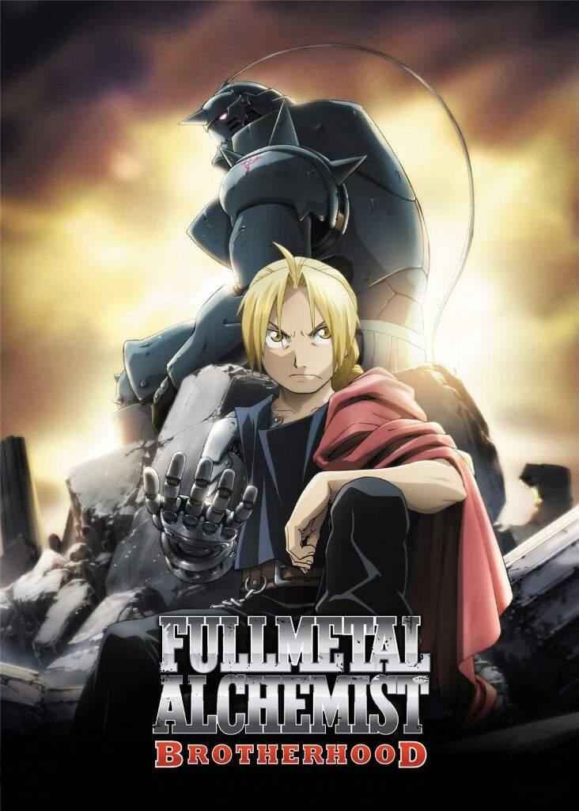
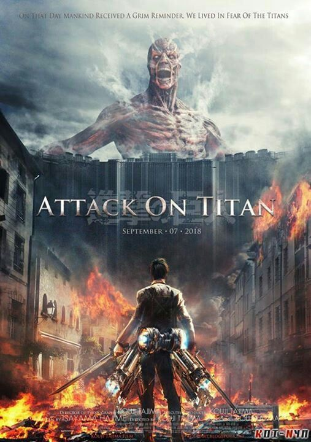

1.-Neon Genesis Evangelion
Ficha y sinopsis
Título: Neon Genesis Evangelio
Género: Acción, Ciencia Ficción, Psicológico, Drama, Mecha
Demografia: Shōnen, Seinen
Capítulos: 26
Estudio: Gainax, Tatsunoko Production
Año de emisión: 1995
El 13 de septiembre del año 2000 un enorme meteorito cayó en la Tierra derritiendo el Polo Sur y arrasando con todas las ciudades costeras, las cuales acabaron siendo destruidas. Este fenómeno fue conocido como el Segundo Impacto, ya que el Primer Impacto fue el que supuso la extinción de los dinosaurios. En el año 2015 aparece un misterioso y extraño ser gigante ataca la ciudad de Tokyo-3 y una organización llamada NERV decide desarrollar una serie de robots gigantes llamados EVA, que se utilizarán para enfrentarse al enemigo y derrotarlo. Sin embargo, los EVA tienen una particularidad y es que sólo pueden ser pilotados por jóvenes de 14 años que cumplan cuenten con unas características no muy definidas.Hacía mucho tiempo que no veía un anime tan enrevesado como lo es Neon Genesis Evangelion y me quedo corta diciendo que sólo es enrevesado. La verdad es que antes de ver este anime me esperaba una mera historia de robots, con muchas peleas, tres niños que tienen que salvar al mundo y ya está pero Evangelion va mucho más allá de eso.
Ver Kuzu no Honkai
Ver Portada
2.-Death Note
Ficha y sinopsis
Título: Death Note
Género: Misterio, drama, sobrenatural, suspenso, policiaco
Demografia: Seinen
Capítulos: 37
Estudio: Madhouse
Año de emisión: 2006
Light Yagami es un excelente estudiante japonés que ha tenido una vida un tanto aburrida. Esto cambia radicalmente cuando encuentra tirado en el patio de la escuela un cuaderno negro conocido como Death Note (Libreta de la Muerte), perdido por un Shinigami (Dios de la muerte) llamado Ryuk.
Cualquier humano cuyo nombre sea escrito en dicho cuaderno morirá; y, Light luego de leer las instrucciones en el mismo ha decidido utilizar este poder para crear un mundo sin criminales, "perfecto" según su visión.
Cuando los criminales comienzan a morir de forma masiva y generalmente víctimas de ataque cardíaco, las autoridades envían al legendario detective L en busca del asesino.
Con L pisándole los talones: ¿podrá mantener Light su propósito incluso arriesgando su vida?
Breve historia:Es uno de los mejores estudiantes de Japón. Una vez que encuentra el Death Note se dispone a acabar con todos los criminales del mundo y crear un mundo donde él sea el dios.
Cuando usa el Death Note, el número de muertes inexplicables llama la atención de todos los medios de comunicación, volviéndose el centro de atención de Japón e incluso del mundo.
Más tarde tendrá que evadir las deducciones de L para poder lograr sus objetivos.
Ver Kuzu no Honkai
Ver Portada
3.-Fullmetal Alchemist
Ficha y sinopsis
Título: Fullmetal Alchemist
Género: Acción, Aventura, Comedia, Drama, Fantasía, Magia, Militar, Steampunk
Demografia: Shōnen
Capítulos: 51
Estudio: Bones
Año de emisión: 2003
Tras perder a su madre, Alphonse y Edward Elric tratan de revivirla usando la ciencia prohibida de la alquimia humana. Sin embargo, la alquimia opera bajo la teoría del cambio equivalente y romper el tabú de la alquimia humana acarrea un alto precio. Ed pierde una de sus piernas y Al su cuerpo. Ed logra sellar el alma de Al dentro de una gran armadura, a costa de su brazo. Años después, Ed (ahora con dos extremidades mecánicas) y Al (aún atrapado en la armadura) dejan su casa de la niñez, cada uno preocupado por la felicidad del otro. Ed, quien tuvo un talento y habilidad natural para la alquimia, se convierte en un alquimista con certificado nacional y pronto es conocido en todas partes como el “Alquimista de hierro”. El verdadero objetivo de ambos hermanos es buscar cualquier información sobre la legendaria Piedra Filosofal, con la esperanza de que ésta les permita recobrar sus cuerpos.No sé ustedes, pero si me presentan una premisa de este tipo el interés que me generaría seria enorme, su sinopsis es atractiva y llamativa pero aunque esta lo sea, como se desarrolla…
Ver Kuzu no Honkai
Ver Portada

4.-Ataque a los titanes
Ficha y sinopsis
Título: Ataque a los titanes
Género: Acción, Ciencia Ficción, Psicológico, Drama,
Demografia: Shōnen, Seinen
Capítulos: 25
Estudio: Wit Studio
Año de emisión: 2009
•Un día en el distrito de Shinganshina ubicada en una parte externa del muro María, es atacado por un titan fuera de lo común, causando una brecha y permitiéndoles el paso a el resto de titanes para invadir la ciudad. En ese incidente varias personas tuvieron que huir (de los cuales unos son Eren, Armin y Mikasa) en canvio otros fueron engullidos por los titanes (la madre de Eren).Después de huir de Shinganshina las cosas no podían ir a peor. Seguidamente de que el titan gigante llamado "El titan Colosal" abriera la brecha otro titan de menor tamaño pero de más daño llamado "El titan Acorazado" hizo caer la muralla María, dejando más de 1/3 de población sin casa, trabajo, família y esperanza.
Ver Kuzu no Honkai
Ver Portada
